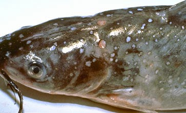
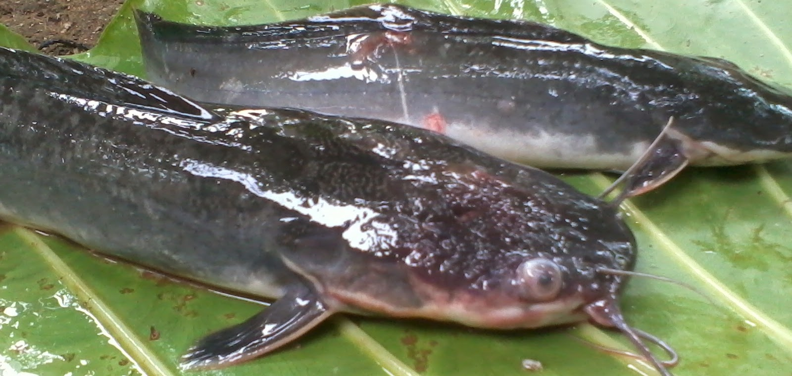
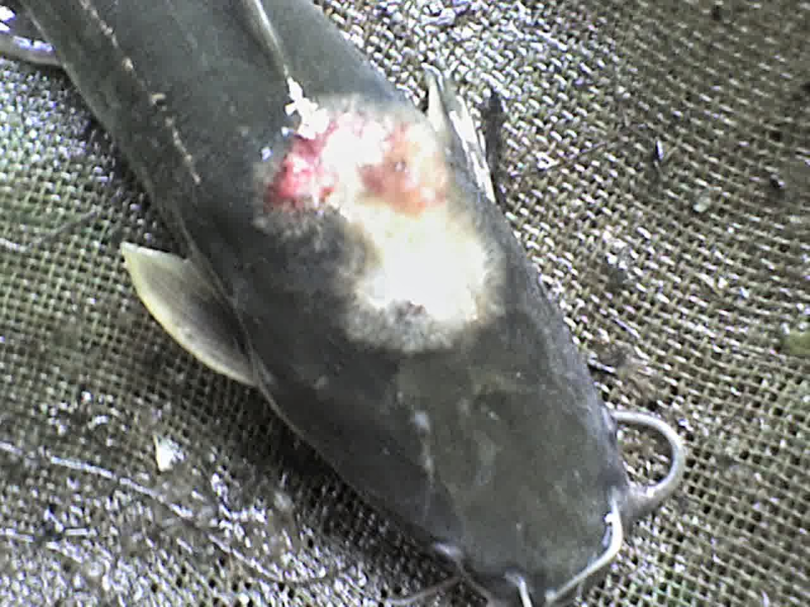

PENYAKIT PADA IKAN LELE
Penyakit bitnik putih (white spot)

Ciri Ciri :
- Terdapat bintik-bintik putih pada sirip, kulit atau insang
- Ikan terlihat menggosok-gosokkan pada benda di sekitarnya
- Frekuensi pernafasan meningkat (megap-megap)
- Nafsu makan menurun
Penyebab :
- Serangan bakteri Ichthyopthirius multifiliis
- Air kolam yang sudah lama tidak di ganti
- Cuaca dingin
Penaggulangan :
- Rutin mengganti air
- Membuat saluran irigasi
- Memgurangi populasi
- Menjaga suhu kolam agar tetap siatas 27°C
- Menaburkan garam dapur sebanyak 300 gram/m3
Penanganan:
- Karantina
- Penggantian air secara rutin
- Perendaman ikan yang sakit pada larutan garam dapur 4 g/l selama 5-10 menit
Penyakit bacterial

Ciri Ciri :
- Perut menggembung
- Terdapat bercak merah pada bagian dada, perut, dan pangkal sirip
- Berkurangnya selaput lendir (mucus)
- Sisik rusak dan rontok
- Sirip punggung, dada dan ekor rusak dan pecah-pecah
Penyebab :
- Bakteri aeromonas
- Bakteri pseudomonas hydrophila
- Kolam tercemar bahan kimia
- Buruknya kualitas air kolam
- Endapan pakan di dasar kolam
Penaggulangan :
- Menjaga suhu kolam agar tetap siatas 27°C
- Membuat sirkulasi air pada kolam
- Pergantian air kolam secara rutin
Penanganan:
- Karantina
- Ikan lele direndam di larutan PK berdosis 10 – 20 ppm selama 30 – 60 menit
Penyakit oleh Jamur

Ciri Ciri :
- Bintik-bintik putih pada sekujur tubuh lele
- Gerakan ikan sering ke pingir kolam
- Berkurangnya selaput lendir (mucus)
- Sering meloncat2 kepermukaan
- Kumis keriting
Penyebab :
- Jamur Saprolegnia SP
- Kondisi cuaca yang buruk
- Kepadatan ikan
- Pemberian pakan yang berlebihan
- Kualitas air yang buruk
- Perawatan yang kurang maksimal
Penaggulangan :
- Perawatan air kolam lele secara rutin atau intensif
- Pemberian probiotik atau herbal secara teratur
- Segera buang air bagian bawah ketika kolam air kolam mulai tidak bagus
- Pemberian pakan usahakan habis termakan jangan ada sisa ataupun yang mengendap di dasar kolam
Penanganan:
- Karantina
- Ikan lele direndam di larutan PK berdosis 10 – 20 ppm selama 30 – 60 menit